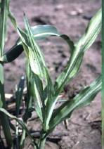
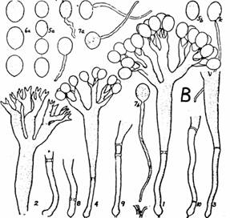
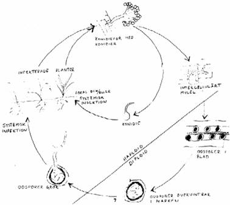

SORGHUM :: MAJOR DISEASE :: DOWNY MILDEW
Downy Mildew - Peronosclerospora sorghi
Symptoms
The fungus causes systemic downy mildew of sorghum. It invades the growing points of young plants, either through oospore or conidial infection. As the leaves unfold they exhibit green or yellow colouration. Abundant downy white growth is produced on the lower surface of the leaves, which consists of sporangiophores and sporangia.
{kind=link}
|  |
Symptoms |
Normally three or four leaves develop the chlorotic downy growth. Subsequent leaves show progressively more of a complete bleaching of the leaf tissue in streaks or stripes. As the infected bleached leaves mature they become necrotic and the interveinal tissues disintegrate, releasing the resting spores (oospores) and leaving the vascular bundles loosely connected to give the typical shredded leaf symptom.
Pathogen
P. sorghi is an obligate parasite systemic in young plant. The mycelium is intercellular, non-septate. Sporangiophores emerge through the stomata in single or in clusters which are stout and dichotomously branched. Spores are single celled, hyaline, globose and thin walled. Oospores are spherical, thick walled and deep brown in colour.
|  |
Sporangia and sporangiophores |
Favourable Conditions
- Maximum sporulation takes place at 100 per cent relative humidity.
- Optimum temperature for sporulation is 21-23˚C during night.
- Light drizzling accompanied by cool weather is highly favourable.
Disease Cycle
The primary infection is by means of oospores present in the soil which germinate and initiate the systemic infection. Oospores persist in the soil for several years. Secondary spread is by air-borne sporangia. Presence of mycelium of the fungus in the seeds of systemically infected plants is also a source of infection.The disease has been known to occur through a collateral host, Heteropogen centortus on which the fungus perpetuates of the host. The breakdown of tissue causes shredding. The oospores either fall to the soil or are wind blown, often within host tissue. They can remain viable in the soil for 5-10 years. Conidia are formed at night in large numbers. The optimum temperature for production is 20-230C.
{kind=link}
|  |
Management
- Crop rotation with other crops viz., pulses and oilseeds.
- Avoid the secondary spread of the disease by roguing out the infected plants since the wind plays a major role in the secondary spread of the disease.
- Grow moderately resistant varieties like Co25 and Co26.
- Seed treatment with Metalaxyl at 6 g/kg of seed.
- Spray Metalaxyl 500 g or Mancozeb 2 kg or Ziram 1 kg or Zineb 1kg/ha.